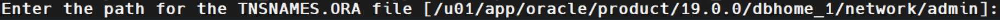

For deployment model option 1, the IIDR source database agent should be installed on a source database server.
The following instructions should be followed to complete the installation for the IIDR Oracle Agent.
Login to the Oracle server mcahing as gsods OS user
Create a directory where the IIDR Agent software will be installed.
mkdir -p /home/gsods/iidr cd /home/gsods/iidr
Download the IIDR Oracle Agent to the newly created directory of /home/gsods/iidr
The downloaded file should then be used in the setup using the following command (example Agent version used is 11.4.0.4:
setup -iidr-11.4.0.4-5629-linux-x86.bin
Ensure that the DISPLAY environment is not set
unset DISPLAY
Begin the IIDR Oracle installation:
chmod u+x setup-iidr-11.4.0.4-5629-linux-x86.bin ./setup-iidr-11.4.0.4-5629-linux-x86.bin
Select the Locale (language)
Preparing to install
Extracting the JRE from the installer archive...
Unpacking the JRE...
Extracting the installation resources from the installer archive...
Configuring the installer for this system's environment...
Launching installer...
===============================================================================
Choose Locale...
----------------
1- Deutsch
->2- English
3- Español
4- Italiano
5- Português (Brasil)
CHOOSE LOCALE BY NUMBER: 2
Select "Install new product"
Introduction
InstallAnywhere will guide you through the installation of IBM InfoSphere Data
Replication 11.4.0.4
Respond to each prompt to proceed to the next step in the installation. If
you want to change something on a previous step, type 'back'.
You may cancel this installation at any time by typing 'quit'.
->1- Install new product
2- Upgrade existing product
ENTER THE NUMBER FOR YOUR CHOICE, OR PRESS <ENTER> TO ACCEPT THE DEFAULT:: 1
Select Datastore Type: Oracle (option 8):
Select the IIDR Offering "IBM InfoSphere Data Replication" (option 4):
/home/gsods/iidr/iidr-oracleClick enter, to select to keep the default Instance Folder of IIDR to be under /home/gsods/iidr/iidr-oracle
Upon a successful installation, the following message is displayed:
The Configuration Tool will be launched to configure a new instance of the Oracle Agent. You must provide a name for the new agent instance, in the example below ORACLE is used:
Accept the default port 11001
Change the Staging Store Disk Quota from the default of 100GB to 1GB
Accept the default max memory of 1024MB
Select [n] for a read-only database connection
Select [n] for archive-only mode
Select option 1 - Manage Encryption Profile
Select option 1 - Add encryption profile:
Enter the name profile 1 for the encryption profile name.
Select option 2 - Disabled - for the above encryption file:
Select Enter for the no-private key store option:
Enter the default path of the trust store:
Enter the default password to encrypt the trust store:
Select JKS as the trust store type (this is the default option 1):
Complete the encryption profile definition by selecting option 4 - Completed management of encryption profiles:
On the following screen, the newly created encryption profile is displayed. Select option 1 of the encryption profile -profile1:
Select [n] not to use JMS.
Enter the full path to ORACLE_HOME (in this example - /u01/app/oracle.product/19.0.0/dbhome_1):
Enter the full path of the tnsnames.ora file. By default it is located under $ORACLE_HOME/network/admin:

Select tns alias from the list that connects to the local database, for example ORCL:
Select [y] for advanced parameters configuration:
Select NONE (default) for the JDBC parameters.
Select [n] (default) for the Kerberos authentication.
Select [n] (default) for database login credentials from an extgernal secret source:
Enter the username GSIIDR and the password:
Select the GSIIDR schema number from the list. The GSIIDR schema holds the IIDR objects),
Select [n] to replicate encrypted columns:
Select Local log reading (option 1) for the IIDR Oracle Agent configuration mode:
Review the summary and start the Oracle IIDR Agent instance:
Review the existing instances:
Select Exit (option 6) to complete the setup: